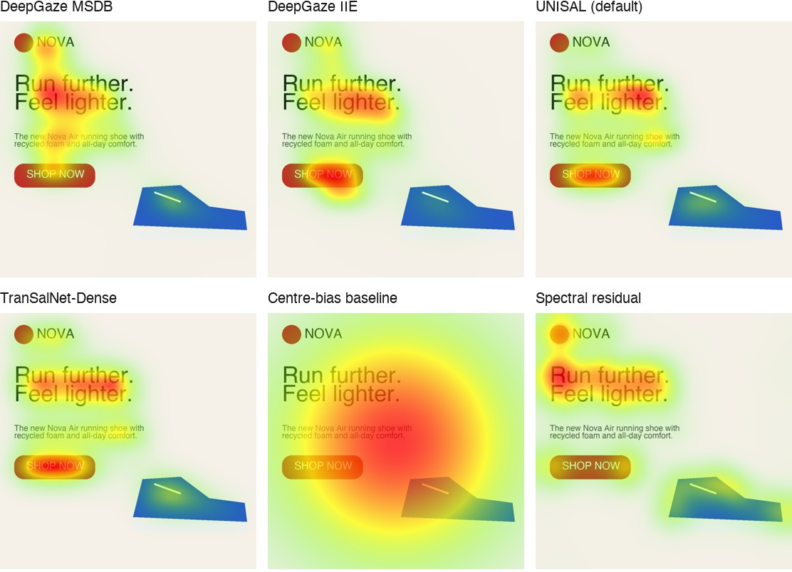

Predicting where people look at ads
A review of commercial and open attention-prediction models, and an open benchmark against human eye tracking
Abstract
Predicted-attention tools promise eye-tracking insight on any creative in seconds, and are now common in advertising pre-testing. We review 15 commercial predictive tools and five measured-attention vendors from public sources, and find that their headline accuracy claims ("92–95%") are mostly AUC expressed as a share of a human ceiling, a saturated metric on which almost every model scores highly. Only four commercial tools publish third-party-computed scores on the MIT/Tübingen benchmark. We then review the open-source state of the art, including licences, which rule out several leading models for commercial use, and benchmark six openly available models against human eye tracking on 149 webpages (FiWI), none of which they were trained on. DeepGaze MSDB is the most accurate (CC 0.676). UNISAL, the strongest model with a permissive licence, reaches CC 0.616 at 17× the speed of DeepGaze IIE. All stock models are weakest on text-heavy layouts and on posters and interfaces (UEyes). Fine-tuning UNISAL on UEyes' training split gives MediaAttention-Ads v1: on held-out posters it reaches CC 0.752 against 0.496 for the best other open model, with non-overlapping 95% confidence intervals, and it also improves on unseen webpages. We release the benchmark, the model and MediaAttention, an open toolkit that uses it, so every number here can be reproduced.
1. Introduction
Attention is the first gate in advertising. A brand, product or message that is not looked at cannot persuade or be remembered, and eye-tracking studies of print ads show that pictures, text size and brand placement shape where attention goes and how it transfers between elements [17]. Visual salience alone can bias quick consumer choices, even against stated preferences [19]. Measuring attention with eye tracking is accurate but slow and costly, so a market has grown around predicting it: upload a creative, receive a heatmap and a set of scores.
For buyers, the difficulty is that these tools are hard to compare. Vendors quote accuracy figures computed on different metrics, test sets and viewing durations, often on their own data. This report makes four contributions:
- A market review of 15 commercial predictive-attention tools and five measured-attention vendors, decoding what their accuracy claims mean (Section 3).
- An open-model review covering accuracy, training data (for contamination) and licences (Section 4).
- An open benchmark of six models against human eye tracking on data none of them was trained on (Section 6).
- How it is built: the toolkit's pipeline, the attention network and how it was trained, and how each score is computed (Section 5).
- MediaAttention-Ads v1, an attention model fine-tuned on design eye tracking that leads every open model on posters, ads and interfaces (Section 6.5), and MediaAttention, an open-source toolkit that turns its attention maps into ad metrics.
2. Background
2.1 Attention-prediction models
Computational saliency began with biologically inspired feature models that combine intensity, colour and orientation contrast [14]. Since 2015, deep networks trained on large fixation datasets such as SALICON [4] (mouse-contingent viewing on 10,000 MS-COCO images) and MIT1003 [5] (eye tracking, 15 viewers) have dominated. The MIT/Tübingen benchmark [2, 29] evaluates models on held-out data (MIT300, CAT2000) and is the closest thing the field has to a neutral scoreboard.
2.2 Metrics
No single metric captures prediction quality [6]. We report six, all computed per image and averaged:
| Metric | Compares | Reading |
|---|---|---|
| AUC | Prediction at fixated pixels vs. all pixels | Ranking quality; saturated (centre bias alone ≈ 0.78 on MIT300) |
| sAUC | Prediction at fixations vs. other images' fixations | Cancels centre bias; 0.5 = no better than a centre prior |
| NSS | Normalised prediction at fixations | Higher is better; 0 = chance |
| CC | Pearson correlation with the blurred fixation map | Our headline metric; 1 = identical maps |
| SIM | Histogram intersection of the two distributions | Overlap; 1 = identical |
| KLD | KL divergence of prediction from ground truth | Lower is better; punishes missed fixations |
2.3 Datasets and contamination
Most models are trained on SALICON and MIT1003, natural photographs viewed freely for a few seconds. Advertising differs: it is dense with text, logos and layout. Design-oriented eye-tracking sets are rare. FiWI [26] covers 149 webpages (pictorial, text and mixed), with 11 viewers and 5 s free viewing. UEyes [27] covers 1,980 posters, webpages and app screens, with 62 participants and up to 7 s viewing. Because neither is in the training data of the models we test, both measure generalisation rather than memorisation.
3. Commercial tools
We surveyed vendor websites, documentation, white papers and third-party listings in October 2026. Figures below are as stated by each vendor unless marked otherwise. "Not disclosed" means we found no public statement.
| Tool | Approach (as disclosed) | Accuracy claim | Independent evidence | Inputs · API · price |
|---|---|---|---|---|
| Neurons AI | CNN encoder–decoder trained on proprietary eye tracking (~20k participants); separate emotion, memory and cognitive-demand models [30] | "95%+"; tech paper: CC 0.944 on own ad data | None found; not on MIT300 | Image, video · API · quote |
| Dragonfly AI | Patented biologically inspired algorithm (QMUL); no training data disclosed | "Within 10% of a human sample"; metric not given | None found | Image, video, web, shelf · API · quote |
| Attention Insight | CNN; 5.5M fixations | 92.5% = MIT300 AUC 0.864 ÷ ceiling 0.934 | On MIT300: CC 0.758 | Image, URL, video · API · €29–299/mo |
| 3M VAS | Feature-based model (edges, intensity, colour, faces) | "92%"; own study: ~85% of the ROC ceiling | Own white paper only | Image, video · no API · ~$550/yr |
| EyeQuant | "7 distinct neural models"; 1.6M data points | "90%+", AUC relative to the human ceiling | None current | Image, page · API (enterprise) · from $97/mo |
| expoze.io (alpha.one) | Proprietary neural net | "95%" = 0.87 vs 0.92 (likely AUC) | One peer-reviewed comparison [31] | Image, video · API · quote |
| Brainsight | Proprietary and MIT/Tübingen data | "94%"; metric not given | None found | Image, video, URL · API · €199–899/mo |
| Feng-GUI | Simulates a 5 s, 40-person test | "92% MIT-validated" | Not on current MIT300 | Image, web, video · API · quote |
| Clueify | Model trained on eye tracking | "92% consistent" | On MIT300: AUC 0.881, CC 0.575 | Image · quote |
| Emotiva | Not disclosed | Not disclosed | On MIT300: CC 0.743 | Image, video · API · demo |
| MedullaAI | Not disclosed | Not disclosed | On MIT300: CC 0.670 | Not disclosed |
| EyeSee predictive | 11.5M gaze points | None | None | Packaging, visuals |
| Kantar LINK AI | Kantar eye-tracking database | None | None | Video |
| Amplified AttentionAI | Attention-decay prediction from 50B+ data points | None | None | Creative · API |
| VisualEyes / Loceye | Acquired by Neurons in 2022; discontinued | 84–86% (CC, own data) | – | – |
Table 1. Commercial predictive-attention tools (public sources, October 2026). Measured-attention vendors, which use panels with webcam or hardware eye tracking (Realeyes/Adverteyes, Amplified Intelligence, Lumen, Adelaide, Tobii/ATTEX), are a different product: they measure real viewers and model media-level attention, not a gaze map for one creative.
3.1 What "X% accurate" means
Where a claim can be decoded, it is usually AUC divided by the inter-observer ceiling. For example, Attention Insight's 92.5% is its MIT300 AUC (0.864) over the gold standard (0.934). AUC is saturated: on MIT300 every listed model scores between 0.84 and 0.89, and a centre-only prior already reaches 0.78. Expressed as a share of the ceiling, small differences look large and weak models look strong. On CC, the same tools separate clearly. Clueify ranks well on AUC (0.881) yet has the lowest CC among them (0.575).
| Model (MIT300) | AUC | sAUC | NSS | CC | KLD | Type |
|---|---|---|---|---|---|---|
| DeepGaze MSDB | 0.894 | 0.816 | 2.74 | 0.883 | 0.254 | open, research |
| DeepGaze IIE | 0.883 | 0.794 | 2.53 | 0.824 | 0.347 | open, research |
| TranSalNet-Dense | 0.873 | 0.747 | 2.41 | 0.807 | 1.014 | open (MIT) |
| UNISAL | 0.877 | 0.784 | 2.37 | 0.785 | 0.415 | open (Apache-2.0) |
| Attention Insight | 0.864 | 0.745 | 2.18 | 0.758 | 0.887 | commercial |
| Emotiva | 0.864 | 0.770 | 2.20 | 0.743 | 0.496 | commercial |
| MedullEyes-V1 | 0.841 | 0.724 | 1.89 | 0.670 | 0.659 | commercial |
| Clueify | 0.881 | 0.765 | 1.49 | 0.575 | 0.889 | commercial |
| Centre bias | 0.783 | – | 1.10 | 0.446 | 0.951 | baseline |
| Gold standard (humans) | 0.934 | 0.883 | 3.14 | 0.983 | 0.060 | ceiling |
Table 2. MIT/Tübingen MIT300 leaderboard [29], accessed 21 Oct 2026. These are natural images with free viewing. Four commercial tools have third-party-computed entries, and all of them score below the best open models. The leaderboard computes a metric-specific map from probabilistic models, which favours entries that submit densities (DeepGaze, UNISAL).
3.2 In-domain claims are not benchmark results
The most detailed public technical document we found, Neurons' tech paper, reports CC 0.944 against held-out data from its own ad corpus and compares this with the best research model's MIT300 CC (0.883) [30]. The two numbers come from different test sets, ceilings and viewing durations (5 s vs ~3 s), so they cannot be compared directly. A fair comparison needs every model on the same held-out data, which is what Section 6 does for the open models. Secondary metrics (clarity, cognitive load, memory, emotion) are defined differently by each vendor, and we found no external validation of any of them.
4. Open models
| Model | Year | Trained on | MIT300 CC | Code / weights licence | Laptop-friendly |
|---|---|---|---|---|---|
| DeepGaze MSDB [28] | 2025 | MIT1003, CAT2000, COCO-Freeview, DAEMONS, FIGRIM | 0.883 | No licence file | Yes (slow) |
| DeepGaze IIE [1] | 2021 | SALICON → MIT1003 | 0.824 | No licence file | Yes |
| TranSalNet [32] | 2022 | SALICON | 0.807 | MIT | Yes |
| UNISAL [25] | 2020 | SALICON, DHF1K, Hollywood-2, UCF-Sports | 0.785 | Apache-2.0 | Yes (4M params) |
| MSI-Net | 2020 | SALICON | 0.779 | MIT | TensorFlow |
| SUM [33] | 2024 | SALICON, MIT1003, CAT2000, OSIE, SalECI, UEyes | – | MIT | CUDA only |
| UMSI | 2020 | Imp1k importance (clicks, not gaze) | – | Non-commercial | Keras |
Table 3. Open image models. Licences matter: the most accurate family (DeepGaze) ships without a licence file, which by default means all rights reserved. Video models (ViNet, TMFI-Net, SalFoM) score well on DHF1K. On real TV ads, a recent study found per-frame DeepGaze IIE reached CC 0.231 against 0.560 for the video model ViNet-S [34], so image models applied frame by frame understate attention dynamics in video.
5. How MediaAttention is built
MediaAttention turns one prediction, where people will look, into the scores a marketer acts on. Figure 1 shows the pipeline: the attention model predicts a fixation-density map, layout detection finds the elements that matter, and the two are combined into metrics and an Impact Score calibrated on the user's own ads.
5.1 The attention network
The model is UNISAL [25], a 3.7M-parameter network built for both images and video (Figure 2). A MobileNetV2 encoder extracts features at three scales. Sixteen learned Gaussian maps are concatenated to the deepest features, so the network can learn general viewing biases, such as the pull of the centre, separately from content. A decoder with skip connections upsamples back to the image. A domain-specific head adapts, resizes and smooths the result, and a log-softmax turns it into a probability map. For video, a convolutional GRU sits on a bypass between encoder and decoder and carries attention from frame to frame; images skip it. We chose UNISAL as the base because it was the most accurate model with a permissive licence on FiWI (Section 6) and is 17–70× faster than DeepGaze, small enough to retrain on a laptop.
5.2 Training MediaAttention-Ads v1
- Data. The UEyes [27] training split: 1,872 posters, mobile UIs, desktop UIs and webpages with eye tracking from 62 participants (7 s free viewing). A random 10% (187 images) is held out to choose the epoch. The UEyes test split (108 images) and FiWI are never used, so they stay fair for evaluation.
- Targets. Each image's fixations, inside the image, are placed on a map and blurred with a Gaussian of ≈1° of visual angle (the dataset's 40 screen pixels per degree, converted to image pixels). The map is resized to a quarter of the network's input resolution and normalised to sum to 1.
- Loss. For prediction P and target Q: L = KL(Q ‖ P) − CC(P, Q). KL divergence penalises attention the model misses; correlation rewards the overall shape. This pair is standard for saliency training.
- Optimisation. Start from UNISAL's SALICON weights; AdamW, learning rate 3×10⁻⁵, weight decay 10⁻⁴, batch size 1 with batch-norm statistics frozen (single-image batches would corrupt them), 8 epochs, about 25 minutes on an Apple M3 Pro. The weights from the epoch with the best held-out CC are kept.
- Video. Only the image branch is tuned. Video keeps UNISAL's DHF1K weights, because no open ad-video eye-tracking set exists yet.
benchmarks/finetune_unisal.py.5.3 From heatmap to scores
- Focus (0–100): sort the normalised heatmap, find the share k of pixels holding 80% of attention, and report 100·max(0, 1 − k/0.8). Attention on a few elements scores high; attention spread evenly scores 0.
- Cognitive demand (0–100): the grayscale image is quantised to 32 levels and split into 16×16 blocks; the mean Shannon entropy of the blocks is divided by its maximum, log₂32.
- Areas of interest. OCR (PP-OCR via RapidOCR) reads every text line. Lines within 75% of the largest text height form the headline; a short line (≤ 4 words) on a uniform colour patch covering at most 10% of the ad is the call to action, and its box grows to the button's edges; the rest is body copy. OWLv2 finds the logo and the product (named with
--product); if the logo detection is weak, a short text line repeated or placed in the top or bottom band is used. - AOI attention and lift. Attention is the heatmap mass inside a box; lift is attention share divided by area share, so lift above 1 means an element draws more than its size.
- Memory (optional): ResMem [10] predicts recognition after a brief exposure; per frame for video.
- Impact Score (1–10): each metric scores 10 inside its target range and falls linearly from 7 at the range edge to 1 at the end of the scale; the Impact Score is the mean.
benchsets the targets from a folder of the user's ads: the top 20% for higher-is-better metrics and the middle 50% for cognitive demand, or, with campaign KPIs, the middle 50% of what the best-performing fifth scored. - Video. Frames are decoded with PyAV. A hard cut is a change of more than 40% in the grayscale histogram, at least 0.5 s after the last cut. AOIs found at the start of each shot are tracked with pyramidal Lucas–Kanade optical flow [21–23], each box with its own shift and zoom. Attention comes from the recurrent model fed at about 6 frames per second.
6. Benchmark
6.1 Setup
- Data. FiWI [26]: 149 webpages at 1360×768, 11 viewers, 5 s free viewing, EyeLink 1000. Ground truth is all viewers' fixations, blurred with the dataset's own Gaussian (σ = 32 px) for CC, SIM and KLD. None of the six models was trained on FiWI.
- Models. We ran each model as released, without fine-tuning:
- DeepGaze IIE and DeepGaze MSDB, with a Gaussian centre-bias prior; MSDB uses averaged dataset parameters and the dataset's 50 px per degree.
- TranSalNet-Dense, SALICON weights, with its own resize and padding.
- UNISAL, SALICON weights, as packaged in MediaAttention (identical to the original repository's output, CC > 0.9999).
- Two baselines: a Gaussian centre prior and spectral residual [3].
- Metrics. pysaliency [2], with AUC computed over all pixels, sAUC over other images' fixations, and MIT/Tübingen KLD regularisation. All metrics are computed per image, then averaged.
- Hardware. Apple M3 Pro, PyTorch MPS. Timing is per-image inference after the model has loaded.
6.2 Results
| Model | CC ↑ | NSS ↑ | sAUC ↑ | AUC ↑ | SIM ↑ | KLD ↓ | s / image | Licence |
|---|---|---|---|---|---|---|---|---|
| DeepGaze MSDB | 0.676 | 1.545 | 0.748 | 0.840 | 0.642 | 0.462 | 2.90 | no licence file |
| DeepGaze IIE | 0.649 | 1.504 | 0.729 | 0.824 | 0.629 | 0.504 | 0.67 | no licence file |
| UNISAL | 0.616 | 1.306 | 0.661 | 0.796 | 0.613 | 0.575 | 0.04 | Apache-2.0 |
| TranSalNet-Dense | 0.608 | 1.254 | 0.646 | 0.788 | 0.605 | 0.603 | 0.10 | MIT |
| Centre-bias baseline | 0.345 | 0.622 | 0.500 | 0.676 | 0.476 | 0.899 | 0.01 | – |
| Spectral residual | 0.209 | 0.403 | 0.562 | 0.633 | 0.449 | 1.052 | 0.00 | – |
Table 4. FiWI, 149 images. Mean per-image scores; ↑ higher is better, ↓ lower is better.
6.3 Findings
Ranking. DeepGaze MSDB leads on every metric (CC 0.676), followed by DeepGaze IIE (0.649), UNISAL (0.616) and TranSalNet (0.608). Every learned model beats the centre prior (CC 0.345) by a wide margin. Spectral residual, a classic low-level model, falls below the centre prior.
The licence–accuracy trade-off is small. UNISAL trails DeepGaze IIE by 0.033 CC and MSDB by 0.060. It runs at 0.04 s per image, about 17× faster than IIE, and is the only model in the top three that can be redistributed and used commercially without asking. That made it the base for MediaAttention's own model (Section 6.5); DeepGaze stays available as an option.
Text is the hard case. Every model scores lowest on text-heavy pages: UNISAL scores 0.531 on text pages against 0.676 on pictorial ones, and MSDB 0.592 against 0.751. Natural-image training data teaches models to look at faces and objects, not at the reading patterns that dominate text layouts. Advertising copy is exactly this kind of content, which makes ad-specific training data the most valuable next step.
| Model | Mixed | Pictorial | Text |
|---|---|---|---|
| DeepGaze MSDB | 0.686 | 0.751 | 0.592 |
| DeepGaze IIE | 0.680 | 0.726 | 0.541 |
| UNISAL | 0.641 | 0.676 | 0.531 |
| TranSalNet-Dense | 0.642 | 0.650 | 0.532 |
| Centre-bias baseline | 0.373 | 0.305 | 0.358 |
| Spectral residual | 0.249 | 0.220 | 0.159 |
Table 5. CC by FiWI page type.

6.4 UEyes: posters, ads and user interfaces
UEyes [27] holds 1,980 screenshots in four categories (webpages, desktop UIs, mobile UIs and posters, about 300 of which are real ads and posters), viewed freely for 7 s by 62 participants on a Gazepoint GP3. None of the six models was trained on any of it, so we evaluate on all 1,980 images. Fixations are mapped to image pixels exactly as the dataset's own code does; ground truth is blurred with ≈1° of visual angle.
| Model | CC ↑ | NSS ↑ | sAUC ↑ | AUC ↑ | SIM ↑ | KLD ↓ | Licence |
|---|---|---|---|---|---|---|---|
| TranSalNet-Dense | 0.534 | 1.010 | 0.655 | 0.750 | 0.586 | 0.700 | MIT |
| UNISAL | 0.502 | 0.966 | 0.656 | 0.746 | 0.573 | 0.779 | Apache-2.0 |
| DeepGaze MSDB | 0.485 | 0.992 | 0.704 | 0.762 | 0.525 | 0.921 | no licence file |
| DeepGaze IIE | 0.485 | 0.953 | 0.684 | 0.752 | 0.548 | 0.777 | no licence file |
| Spectral residual | 0.232 | 0.450 | 0.623 | 0.650 | 0.463 | 1.006 | – |
| Centre-bias baseline | 0.220 | 0.374 | 0.497 | 0.608 | 0.468 | 0.963 | – |
Table 6. UEyes, 1980 images, models as released. Timing is omitted: these runs shared the machine with training (see Table 4 for speed).
| Model | Desktop | Mobile | Poster | Web |
|---|---|---|---|---|
| DeepGaze MSDB | 0.517 | 0.516 | 0.463 | 0.443 |
| DeepGaze IIE | 0.513 | 0.478 | 0.483 | 0.465 |
| UNISAL | 0.526 | 0.521 | 0.494 | 0.468 |
| TranSalNet-Dense | 0.543 | 0.586 | 0.523 | 0.483 |
| Centre-bias baseline | 0.198 | 0.201 | 0.257 | 0.225 |
| Spectral residual | 0.290 | 0.198 | 0.257 | 0.185 |
Table 7. CC by UEyes category.
TranSalNet-Dense is the most accurate on UEyes (CC 0.534); UNISAL reaches 0.502. Interfaces and posters are harder than webpages for every model, which is where design-specific data matters. Model size does not close the gap: DeepGaze MSDB, at 452M parameters, ties DeepGaze IIE and trails 3.7M UNISAL in CC (MSDB was run on a Colab T4 GPU with the same code).
6.5 An ad- and UI-tuned model
We fine-tuned UNISAL on the UEyes training split (KL − CC loss, best epoch chosen on a held-out tenth of the training images) and evaluated it on the UEyes test split, 108 images it never saw, and on FiWI, which is out of domain for both.
| Model | CC ↑ | NSS ↑ | sAUC ↑ | AUC ↑ | SIM ↑ | KLD ↓ | Licence |
|---|---|---|---|---|---|---|---|
| MediaAttention-Ads v1 (ours) | 0.735 | 1.529 | 0.731 | 0.826 | 0.680 | 0.399 | Apache-2.0 |
| TranSalNet-Dense | 0.514 | 1.002 | 0.646 | 0.752 | 0.559 | 0.771 | MIT |
| UNISAL | 0.467 | 0.919 | 0.640 | 0.744 | 0.543 | 0.864 | Apache-2.0 |
| DeepGaze IIE | 0.454 | 0.917 | 0.667 | 0.746 | 0.522 | 0.871 | no licence file |
| DeepGaze MSDB | 0.452 | 0.939 | 0.690 | 0.755 | 0.499 | 1.039 | no licence file |
Table 8. UEyes test split. Fine-tuning changes CC by +0.268; on FiWI by +0.015.
We call the fine-tuned network MediaAttention-Ads v1. It keeps UNISAL's architecture (3.7M parameters) and was trained for 8 epochs (AdamW, lr 3e-5, batch norm frozen, about 25 minutes on an Apple M3 Pro). Held-out CC rose from 0.502 to 0.769, with the best epoch at 5. Table 9 isolates the 27 test posters, the category closest to print and display advertising.
| Model | CC ↑ | 95% CI | NSS ↑ | KLD ↓ |
|---|---|---|---|---|
| MediaAttention-Ads v1 (ours) | 0.752 | [0.695, 0.809] | 1.55 | 0.354 |
| TranSalNet-Dense | 0.496 | [0.440, 0.551] | 0.98 | 0.792 |
| DeepGaze IIE | 0.458 | [0.392, 0.524] | 0.90 | 0.894 |
| UNISAL (stock) | 0.454 | [0.389, 0.518] | 0.90 | 0.913 |
| DeepGaze MSDB | 0.416 | [0.351, 0.481] | 0.86 | 1.079 |
| Spectral residual | 0.285 | [0.209, 0.361] | 0.58 | 1.082 |
| Centre-bias baseline | 0.281 | [0.218, 0.344] | 0.55 | 0.949 |
Table 9. UEyes test posters (n = 27), 95% confidence intervals over images. MediaAttention-Ads v1's interval does not overlap any other model's: +0.256 CC (+52%) over the best other open model.
6.6 Behaviour on 272 real ads
To see how the pipeline behaves on real creatives, we scored 272 openly licensed print ads and advertising posters from Wikimedia Commons (CLIP-filtered from 300 to remove photographs of ads in the wild). There is no eye tracking here, so this measures behaviour, not accuracy. A visual audit found four layout rules that real ads broke (coloured bands read as buttons, a top/bottom wordmark fallback that picked fine print, and headline and body boxes merged across the page). Fixing them changed the medians substantially:
| Median per ad | Before fix | After fix |
|---|---|---|
| Body-copy attention (%) | 76.8 | 34.9 |
| Headline attention (%) | 23.8 | 14.6 |
| Brand attention (%) | 1.0 | 2.4 |
| CTA attention (%) | 5.1 | 3.6 |
| Focus | 55.9 | 55.9 |
| Cognitive demand | 42.4 | 42.4 |
Table 10. 272 Wikimedia ads, stock UNISAL. Targets calibrated on these ads (top 20%; middle 50% for complexity): focus 66.4–100.0, cognitive demand 32.9–52.0, brand attention ≥ 7.3%. These are vintage print ads, so treat them as a reference, not as targets for modern digital creative.
6.7 Architectures compared
Table 11 sets the models side by side, with Neurons' commercial model as described in its public tech paper [30] for reference. Accuracy columns are from Tables 3 and 8.
| Model | Architecture | Params | Trained on | Video | Licence | s / image (M3 Pro) | UEyes test CC | FiWI CC |
|---|---|---|---|---|---|---|---|---|
| MediaAttention-Ads v1 (ours) | UNISAL: MobileNetV2 encoder, Gaussian priors, ConvGRU (video), decoder with skips | 3.7M | SALICON → fine-tuned on UEyes (posters, ads, UIs) | yes (recurrent) | Apache-2.0 | 0.04 | 0.735 | 0.631 |
| UNISAL (stock) | same as above | 3.7M | SALICON, DHF1K, Hollywood-2, UCF Sports | yes (recurrent) | Apache-2.0 | 0.04 | 0.467 | 0.616 |
| TranSalNet-Dense | DenseNet-161 CNN + transformer encoder + CNN decoder | 76.6M | SALICON | no | MIT | 0.10 | 0.514 | 0.608 |
| DeepGaze IIE | ensemble of 4 backbones (DenseNet-201, ResNeXt-50, EfficientNet-B5, ShapeNet-ResNet-50) + readout | 104.0M | SALICON → MIT1003 | no | no licence file | 0.67 | 0.454 | 0.649 |
| DeepGaze MSDB | CLIP RN50x64 + DINOv2 ViT-B/14 at several scales + readout, dataset-bias parameters | 451.6M | MIT1003, CAT2000, COCO-Freeview, DAEMONS, FIGRIM | no | no licence file | 2.90 | 0.452 | 0.676 |
| Neurons (commercial, for reference) | CNN encoder–decoder (ConvNeXt / ResNet-50 components), per its public tech paper | not disclosed | proprietary eye tracking (~20k participants) | separate video model | closed | – | not runnable | not runnable |
Table 11. Architecture, size, training data, video support, licence and speed. Parameter counts were measured by loading each model.
Where MediaAttention-Ads v1 wins. (1) Accuracy on designed content: it leads every UEyes category by 0.19–0.26 CC and is the best of all models on FiWI's text-heavy pages. (2) Efficiency: it is 20–120× smaller and 17–70× faster than DeepGaze, so it runs on a laptop CPU. (3) One network for images and video. (4) Apache-2.0 code and weights.
Where it does not. DeepGaze MSDB, at 120× the size, remains ~0.05 CC ahead on FiWI and further ahead on photo-led pages. The video branch is not ad-tuned. UEyes is one lab panel of 62 participants viewing freely, unlike a one-second glance in a feed.
7. Discussion
7.1 Questions to ask a vendor
- Which metric? Ask for CC and NSS, not only AUC.
- Which test set, was it held out, and was it scored by a third party?
- Which viewing duration and which human ceiling?
- How were secondary scores (clarity, memory, emotion) validated against real outcomes?
A tool that publishes MIT/Tübingen entries, or runs on an open benchmark such as this one, can be compared. A bare percentage cannot.
7.2 What predicted attention can and cannot tell you
Models trained on free viewing predict bottom-up, first-seconds attention: what pops out. They do not model goal-directed search (a shopper looking for a price), audio in video, or the placement context of an ad. Small independent comparisons of commercial tools with eye tracking point the same way: predicted maps track salience but miss goal-driven attention. Predicted attention is a fast first filter for comparing creative variants, not a replacement for testing with people when stakes are high.
7.3 An open panel
Commercial tools rest on private panels, and their secondary metrics (engagement, trust, memory) cannot be checked from outside. MediaAttention ships the panel instead: a static browser study with no server and no uploads.
- Gaze: estimated from MediaPipe face landmarks with a per-participant ridge calibration, a click-to-fixate 9-point grid followed by a 5-point accuracy check.
- Implicit responses: timed Yes/No word tests, with answers weighted by each person's relative speed.
- Memory: a recognition test against unseen foil ads.
- Data handling: participants download their own results file and choose whether to send it back.
mediaattention collectconverts the files into an eye-tracking dataset that any model can be scored on, plus per-ad implicit scores that plug into KPI calibration.
Webcam gaze is coarse (2–4° versus about 0.5° for lab trackers), but aggregated over participants it is enough to validate heatmaps on one's own creatives. It is also a route to openly licensed training data for ad-specific attention and emotion models.
8. Limitations and roadmap
- Data. FiWI is small (149 webpages, 11 viewers). UEyes is larger but is one lab panel (62 participants, free viewing, 7 s). Neither measures a one-second glance in a scrolling feed.
- Scope. We evaluated only openly available models; commercial tools could not be run on the same data.
- Video and outcomes. Video attention is not yet ad-tuned or validated on ad eye tracking, and secondary metrics have not been validated against campaign outcomes.
Roadmap. Next: tune the recurrent video branch on ad video eye tracking; score creatives in feed context with 1–2 s exposures; retrain the memory model on openly licensed data; and train a v2 that distils DeepGaze MSDB on photographs while keeping the design data, to close the remaining gap on photo-led creatives. Later: emotion, engagement and trust models trained on panel data from the open study kit; audio for video ads; and an open, growing ad eye-tracking dataset built from contributed studies.
9. Conclusion
Commercial attention-prediction claims are rarely comparable, and where third-party scores exist, the best open models match or beat them. A small, permissively licensed network fine-tuned on design eye tracking, MediaAttention-Ads v1, is the most accurate open model on posters, ads and interfaces by a wide margin, and stays within a few hundredths of CC of the state of the art on unseen webpages while running in tens of milliseconds. The benchmark, the toolkit and this report are open, so these claims can be checked and extended.
Appendix A · Reproducibility
git clone https://github.com/pranikz/MediaAttention && cd MediaAttention pip install -e ".[unisal]" "git+https://github.com/matthias-k/pysaliency.git@dev" pandas scikit-image pip install torch torchvision einops clip-anytorch "deepgaze_pytorch @ git+https://github.com/matthias-k/DeepGaze" fire python benchmarks/finetune_unisal.py --epochs 8 # reproduces MediaAttention-Ads v1 python benchmarks/run.py fiwi --models center,spectral,unisal,transalnet,deepgaze_iie,deepgaze_msdb,unisal_ueyes python benchmarks/run.py ueyes_test --models center,spectral,unisal,transalnet,deepgaze_iie,deepgaze_msdb,unisal_ueyes python docs/research/build.py
Dataset and third-party model locations are documented in benchmarks/run.py. Per-image scores are in benchmarks/results/.
References
- Linardos, A., Kümmerer, M., Press, O. & Bethge, M. (2021). DeepGaze IIE: Calibrated prediction in and out-of-domain for state-of-the-art saliency modeling. ICCV. arXiv:2105.12441
- Kümmerer, M., Wallis, T. S. A. & Bethge, M. (2018). Saliency benchmarking made easy: Separating models, maps and metrics. ECCV. arXiv:1704.08615
- Hou, X. & Zhang, L. (2007). Saliency detection: A spectral residual approach. CVPR. doi:10.1109/CVPR.2007.383267
- Jiang, M., Huang, S., Duan, J. & Zhao, Q. (2015). SALICON: Saliency in context. CVPR. doi:10.1109/CVPR.2015.7298710
- Judd, T., Ehinger, K., Durand, F. & Torralba, A. (2009). Learning to predict where humans look. ICCV. doi:10.1109/ICCV.2009.5459462
- Bylinskii, Z., Judd, T., Oliva, A., Torralba, A. & Durand, F. (2019). What do different evaluation metrics tell us about saliency models? IEEE TPAMI 41(3). arXiv:1604.03605
- Tatler, B. W. (2007). The central fixation bias in scene viewing. Journal of Vision 7(14). doi:10.1167/7.14.4
- Minderer, M., Gritsenko, A. & Houlsby, N. (2023). Scaling open-vocabulary object detection. NeurIPS. arXiv:2306.09683
- Du, Y. et al. (2020). PP-OCR: A practical ultra lightweight OCR system. arXiv:2009.09941
- Needell, C. D. & Bainbridge, W. A. (2022). Embracing new techniques in deep learning for estimating image memorability. Computational Brain & Behavior 5. doi:10.1007/s42113-022-00126-5
- Khosla, A., Raju, A. S., Torralba, A. & Oliva, A. (2015). Understanding and predicting image memorability at a large scale. ICCV. doi:10.1109/ICCV.2015.275
- Isola, P., Xiao, J., Torralba, A. & Oliva, A. (2011). What makes an image memorable? CVPR. doi:10.1109/CVPR.2011.5995721
- Goetschalckx, L. & Wagemans, J. (2019). MemCat: a new category-based image set quantified on memorability. PeerJ 7. doi:10.7717/peerj.8169
- Itti, L., Koch, C. & Niebur, E. (1998). A model of saliency-based visual attention for rapid scene analysis. IEEE TPAMI 20(11). doi:10.1109/34.730558
- Shannon, C. E. (1948). A mathematical theory of communication. Bell System Technical Journal 27. doi:10.1002/j.1538-7305.1948.tb01338.x
- Rosenholtz, R., Li, Y. & Nakano, L. (2007). Measuring visual clutter. Journal of Vision 7(2). doi:10.1167/7.2.17
- Pieters, R. & Wedel, M. (2004). Attention capture and transfer in advertising: Brand, pictorial, and text-size effects. Journal of Marketing 68(2). doi:10.1509/jmkg.68.2.36.27794
- Pieters, R., Wedel, M. & Batra, R. (2010). The stopping power of advertising: Measures and effects of visual complexity. Journal of Marketing 74(5). doi:10.1509/jmkg.74.5.048
- Milosavljevic, M., Navalpakkam, V., Koch, C. & Rangel, A. (2012). Relative visual saliency differences induce sizable bias in consumer choice. Journal of Consumer Psychology 22(1). doi:10.1016/j.jcps.2011.10.002
- Teixeira, T., Wedel, M. & Pieters, R. (2010). Moment-to-moment optimal branding in TV commercials: Preventing avoidance by pulsing. Marketing Science 29(5). doi:10.1287/mksc.1100.0567
- Lucas, B. D. & Kanade, T. (1981). An iterative image registration technique with an application to stereo vision. IJCAI.
- Shi, J. & Tomasi, C. (1994). Good features to track. CVPR. doi:10.1109/CVPR.1994.323794
- Radvansky, G. A., Krawietz, S. A. & Tamplin, A. K. (2011). Walking through doorways causes forgetting: Further explorations. QJEP 64(8). doi:10.1080/17470218.2011.571267
- Abid, A. et al. (2019). Gradio: Hassle-free sharing and testing of ML models in the wild. arXiv:1906.02569
- Droste, R., Jiao, J. & Noble, J. A. (2020). Unified image and video saliency modeling. ECCV. arXiv:2003.05477
- Shen, C. & Zhao, Q. (2014). Webpage saliency. ECCV.
- Jiang, Y., Leiva, L. A., Rezazadegan Tavakoli, H., Houssel, P. R. B., Kylmälä, J. & Oulasvirta, A. (2023). UEyes: Understanding visual saliency across user interface types. CHI. doi:10.1145/3544548.3581096
- Kümmerer, M., Khanuja, H. S. & Bethge, M. (2025). Modeling saliency dataset bias (DeepGaze MSDB). arXiv:2505.10169
- MIT/Tübingen Saliency Benchmark, MIT300 results. saliency.tuebingen.ai/results.html, accessed 21 October 2026.
- Neurons Inc. (2025). Neurons AI tech paper. Public document linked from neuronsinc.com/neurons-ai, accessed October 2026.
- Ahtik, J. (2023). Using artificial intelligence for predictive eye-tracking analysis to evaluate photographs. Journal of Graphic Engineering and Design 14(1).
- Lou, J., Lin, H., Marshall, D., Saupe, D. & Liu, H. (2022). TranSalNet: Towards perceptually relevant visual saliency prediction. Neurocomputing 494. arXiv:2110.03593
- Hosseini, A., Kazerouni, A., Akhavan, S., Brudno, M. & Taati, B. (2024). SUM: Saliency unification through Mamba for visual attention modeling. arXiv:2406.17815
- Ye, J. & Wedel, M. (2026). ViASNet: A video ad saliency network for predicting dynamic saliency and viewer engagement. arXiv:2605.29302
Vendor information in Section 3 is from public websites, documentation and listings and may change. Vendor accuracy figures are their claims, not our measurements.